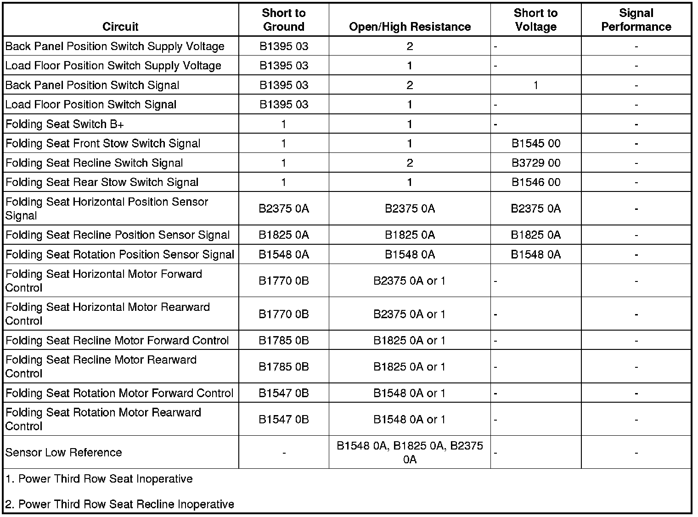

Power Third Row Seat Inoperative
Power Third Row Seat Inoperative
Diagnostic Instructions
* Perform the Diagnostic System Check - Vehicle (Initial Inspection and Diagnostic Overview) prior to using this diagnostic procedure.
* Review Strategy Based Diagnosis (Initial Inspection and Diagnostic Overview) for an overview of the diagnostic approach.
* Diagnostic Procedure Instructions (Initial Inspection and Diagnostic Overview) provides an overview of each diagnostic category.
Diagnostic Fault Information

Circuit/System Description
With the seat in the seated position, and when a stow switch is pressed, battery positive voltage is applied through the switch signal circuit to the rear seat module (RSM). The RSM then simultaneously commands the rotation motor to rotate the seat back 180 degrees forward and the seat horizontal motor to move the seat cushion forward until it reaches it's end of travel. After seat back rotation and seat horizontal movements are complete, the RSM then commands the recline motor to lower the seat back rearward to the stow position. Moving the seat to the seated position works similarly to moving the seat to the stowed position, except battery positive voltage and ground are applied to the opposite control circuits causing the motors to run in the opposite direction.
Diagnostic Aids
* The Seat Back Load Floor Position Switch is also referenced as the Seat Back Presence Sensor.
* The Seat Back Panel Position Switch is also referenced as the Rear Seat Number 2 Folding Actuator Seat Position Switch.
Reference Information
Schematic Reference
Rear Seat Schematics (Rear Seat Schematics)
Connector End View Reference
Component Connector End Views (Connector Views)
Description and Operation
Power Seats System Description and Operation (Folding Seat) (Power Seats System Description and Operation (Folding Seat))Power Seats System Description and Operation (Front Seat) (Power Seats System Description and Operation (Front Seat))
Electrical Information Reference
* Circuit Testing (Component Tests and General Diagnostics)
* Connector Repairs (Component Tests and General Diagnostics)
* Testing for Intermittent Conditions and Poor Connections (Component Tests and General Diagnostics)
* Wiring Repairs (Component Tests and General Diagnostics)
Scan Tool Reference
Control Module References (Programming and Relearning)
Circuit/System Verification
1. With a scan tool, verify DTCs B1547, B1770, and B1785 are not set as history.
• If any of the DTCs are set, refer to Diagnostic Trouble Code (DTC) List - Vehicle (Diagnostic Trouble Code Descriptions) .
2. Verify with a scan tool the rear seat module (RSM) is calibrated. The calibrated reading should display YES.
• If not the specified value, refer to Power Folding Seat Calibration (Programming and Relearning) .
3. Ignition ON, right rear door OPEN, observe the scan tool right rear door ajar sw. parameter. The reading should display DOOR AJAR.
• If not the specified value, refer to Door Ajar Indicator Malfunction (Door Ajar Indicator Malfunction) .
4. Ignition ON, liftgate OPEN, observe the scan tool liftgate ajar switch parameter. The reading should display ACTIVE.
• If not the specified value, refer to DTC B396F (B396F) .
5. To enable the RSM place the gear selector in PARK, open the rear liftgate or the right rear passenger door, and perform one of the following procedures:
* Turn the ignition ON.
* Press the remote control keyless entry transmitter unlock button 3 times within 5 seconds.
* Press the driver or passenger door lock switch unlock button 3 times within 5 seconds.
6. Ignition ON, observe the following scan tool rear seat module parameters while pressing and releasing the related switch. The reading should change between INACTIVE and ACTIVE.
* Front Stow Switch
* Rear Stow Switch
* Recline Switch
• If not the specified value, refer to Folding Seat Switch Malfunction.
7. Observe the position of the inoperative power folding seat.
• If the seat is stuck in a position other than the stowed position, refer to Seat Back Panel Position Switch Malfunction.
• If the seat is stuck in the stowed position, refer to Load Floor Position Switch Malfunction.
Circuit/System Testing
Folding Seat Switch Malfunction
1. Ignition OFF, disconnect the harness connector at the appropriate folding seat stow switch or recline switch.
2. Ignition ON, verify that a test lamp illuminates between the B+ circuit terminal A and ground.
• If the test lamp does not illuminate, test the B+ circuit for a short to ground or an open/high resistance. If the circuit tests normal and the B+ circuit fuse is open, test the signal circuit terminal C for a short to ground.
3. Install a 3 A fused jumper wire between the signal circuit terminal C and the B+ circuit terminal A. Verify with a scan tool the Stow or Recline Switch parameters are ACTIVE.
• If not the specified value, test the signal circuit for an open/high resistance. If the circuit tests normal, replace RSM.
4. If all circuits test normal, test or replace the appropriate folding seat stow or recline switch.
Seat Back Panel Position Switch Malfunction
1. Ignition OFF, disconnect the harness connector at the seat back panel position switch.
2. Ignition ON, test for B+ between the supply voltage circuit terminal B and ground.
• If not the specified value, test the supply voltage circuit for an open/high resistance. If the circuit tests normal, replace the RSM.
3. With a scan tool, verify the rear seat module back panel position switch parameter is INACTIVE.
• If not the specified value, test the signal circuit terminal A for a short to voltage. If the circuit tests normal, replace the RSM.
4. Install a 3A fused jumper wire between the signal circuit terminal A and the supply voltage circuit terminal B. Verify the scan tool rear seat module back panel position switch parameter is ACTIVE.
• If not the specified value, test the signal circuit for an open/high resistance. If the circuit tests normal, replace the RSM.
5. If all circuits test normal, test or replace the seat back panel position switch.
Load Floor Position Switch Malfunction
1. Ignition OFF, disconnect the harness connector at the seat back load floor position switch.
2. Ignition ON, test for B+ between the supply voltage circuit terminal B and ground.
• If not the specified value, test the supply voltage circuit for an open/high resistance. If the circuit tests normal, replace the RSM.
3. With a scan tool, verify the rear seat module load floor switch parameter is ACTIVE.
• If not the specified value, test the signal circuit terminal A for a short to voltage. If the circuit tests normal, replace the RSM.
4. Install a 3A fused jumper wire between the signal circuit terminal A and the supply voltage circuit terminal B. Verify the scan tool rear seat module load floor switch parameter is ACTIVE.
• If not the specified value, test the signal circuit for an open/high resistance. If the circuit tests normal, replace the RSM.
5. If all circuits test normal, test or replace the load floor position switch.
Component Testing
Folding Seat Stow or Recline Switch
1. Ignition OFF, disconnect the harness connector at the appropriate folding seat stow switch or recline switch.
2. Test for infinite resistance between the signal terminal C and the B+ terminal A with the switch in the open position.
• If not the specified value, replace the folding seat switch.
3. Test for less than 2 ohms of resistance between the signal terminal C and the B+ terminal A with the switch in the closed position.
• If greater than the specified range, replace the folding seat switch.
Seat Back Panel Position Switch or Load Floor Position Switch
1. Ignition OFF, disconnect the harness connector at the appropriate seat back panel position switch or load floor position switch.
2. Test for infinite resistance between the signal terminal A and the B+ terminal B with the switch in the open position.
• If not the specified value, replace the appropriate seat position switch.
3. Test for less than 2 ohms of resistance between the signal terminal A and the B+ terminal B with the switch in the closed position.
• If greater than the specified range, replace the appropriate seat position switch.
Repair Instructions
Important: After performing this diagnostic test and electrical or component repairs have been completed, the folding seat may be in an unknown state and out of calibration with the RSM. The RSM must be calibrated before the folding seat system will operate. Refer to Power Folding Seat Calibration (Programming and Relearning) .
Perform the Diagnostic Repair Verification (Verification Tests) after completing the diagnostic procedure.
* Rear Seat Number 2 Folding Actuator Switch Replacement - Rear Quarter Trim Rear (Rear Seat Number 2 Folding Actuator Switch Replacement - Rear Quarter Trim Rear)
* Rear Seat Number 2 Folding Actuator Switch Replacement - Rear Quarter Trim Front (Rear Seat Number 2 Folding Actuator Switch Replacement - Rear Quarter Trim Front)
* Rear Seat Number 2 Seat Back Presence Sensor Replacement (Rear Seat Number 2 Seat Back Presence Sensor Replacement)
* Rear Seat Number 2 Folding Actuator Seat Position Switch Replacement (Rear Seat Number 2 Folding Actuator Seat Position Switch Replacement)
* Control Module References (Programming and Relearning) for MSM replacement, setup, and programming